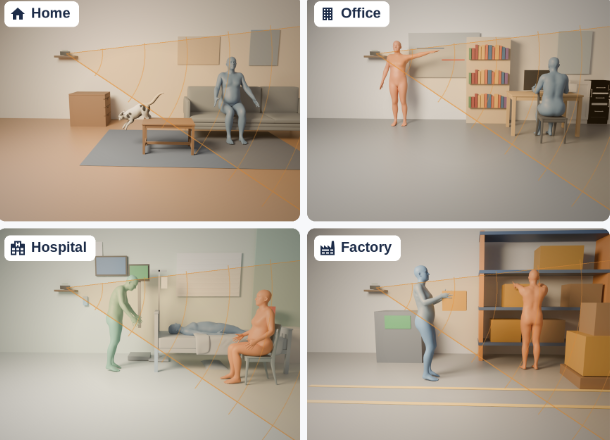

A differentiable simulation pipeline that generates targeted radar training data for activity recognition across subjects, activities, and environments.
Generate controllable subject motion and behavior from text prompts.
Place motion in sensor-agnostic RF scenes and simulate signals with RFDT, a physically based differentiable RF ray tracer.
Scale toward a million-example labeled corpus and use simulator gradients to emphasize configurations where the recognition model struggles.
Combine synthetic data with real human and pet radar measurements for general activity recognition beyond fall detection.
From generated animal behavior to a labeled synthetic radar sample.

Controllable RF scenes across varied indoor environments.
Featured research · 02
Inferring RF Material Properties from Graphics
A material-learning framework that estimates how objects respond to RF from widely available graphics assets, while preserving uncertainty in the mapping.
Generate paired optical renderings and RF simulations with consistent geometry and physical material state.
Study which parts of PBR appearance constrain RF behavior and where the mapping remains ambiguous.
Predict frequency-dependent permittivity, effective conductivity, and calibrated uncertainty from graphics assets.
Reduce the need to measure the RF response of every new object before using it in simulation.
Wenxuan Guo, Xingyu Chen, Xinyu Zhang · CWC Annual Research Review, UC San Diego · Oct 2026
PosterP1
Improving Proof Learning with Proof Blocks
Wenxuan Guo, Cyrus Omar · CSE Undergraduate Research Symposium, University of Michigan · Apr 2025
Poster
Selected project
CWC Faculty Intelligence WebHub
UC San Diego · 2026—Present
Research information, made useful.
Built and deployed an evidence-backed faculty intelligence system that turns a roster into searchable profiles, monthly activity digests, and collaboration recommendations for 20+ CWC faculty.
Multi-source acquisition with identity checks, caching, deduplication, and traceable evidence bundles.
LLM-generated summaries and themes with unsupported-claim validation and deterministic fallbacks.
Encrypted login, admin feedback loop, and automated monthly refresh through GitHub Actions.